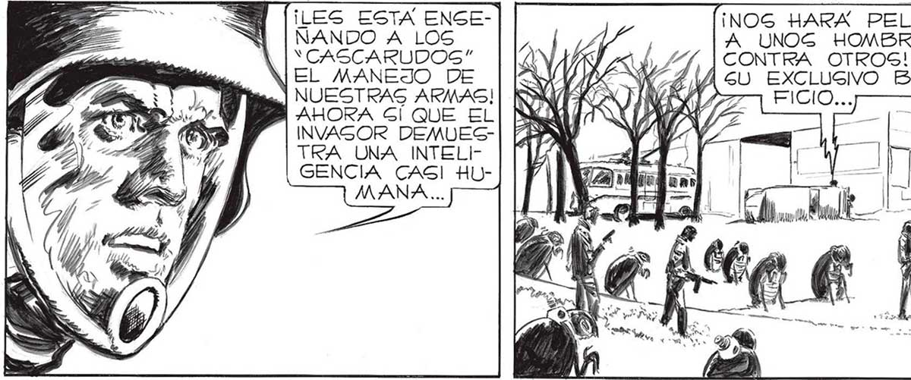
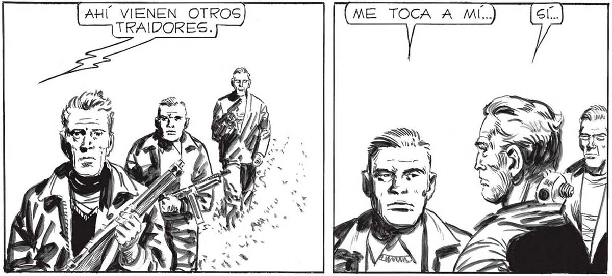
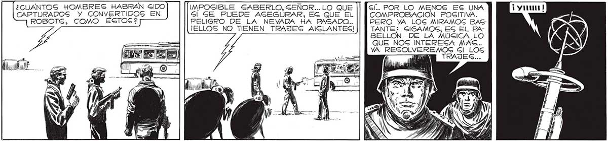

142 ES LO QUE ESTA HACIENDO, FERANCO..¡O MUCHO ME EQUt VOCO, O ESTAMOG ANTE UN TRAIDOR, ANTE UN HOMBRE A DECIDIDO A AYUDAR AL ENEMIGO! ¡LES ESTA ENSEÑANDO A LOS YCASCARUDOS" EL MANEJO DE NUESTRAS ARMAS! INOG HARA PELEAR A UNOG HOMBRES | CONTRA OTROS! EN Y EXCLUSIVO BENETRA UNA INTELIGENCIA CASI HLMANA.... — lr > lt ¡et >< AHÍ VIENEN OTROS TRAIDORES. ¡TENE CLAVADO EN LA NUCA UN APARATO IGUAL AL DE LOS “CASCARUDOCS” LOG TOMARON PRISIONEROS Y LES INSERTARON EN LA NUCA EL APARATO QUE LOS CONVIERTE EN ROBOTS... : ¡GON MANEJADOS A DISTANCIA POR iS! ¡AHORA] | | EL INVASOR, IGUAL QUE LOS “CASCARU- pl ENTIENDO DOS”! MENA 1 “MENEM MSN IIS d ¿CUANTOS HOMBRES HABRAN SIDO IMPOGIBLE SABERLO, SENOR... LO QUE Gl... POR LO MENOS ES UNA CAPTURADOS Y CONVERTIDOS EN Sl GE PUEDE AGEGURAR, ES QUE EL COMPROBACION POSITIVA. ROBOTS, COMO ESTOS? PELIGRO DE LA NEVADA HA PASADO... PERO YA LOS MIRAMOS BAS¡ELLOS NO TIENEN TRAJES AISLANTES! TANTE: SIGAMOS, ES EL PABELLON DE LA MÚGICA LO QUE NOG INTEREGA MAS... YA RESOLVEREMOS Gl LOG TRAJES...


